Voice Halo — efectele rămase
Capturi din pagina reală, cu semnal de test. Cele marcate − și efectul cu apă desenat de mână nu sunt aici.
· înapoi la halo
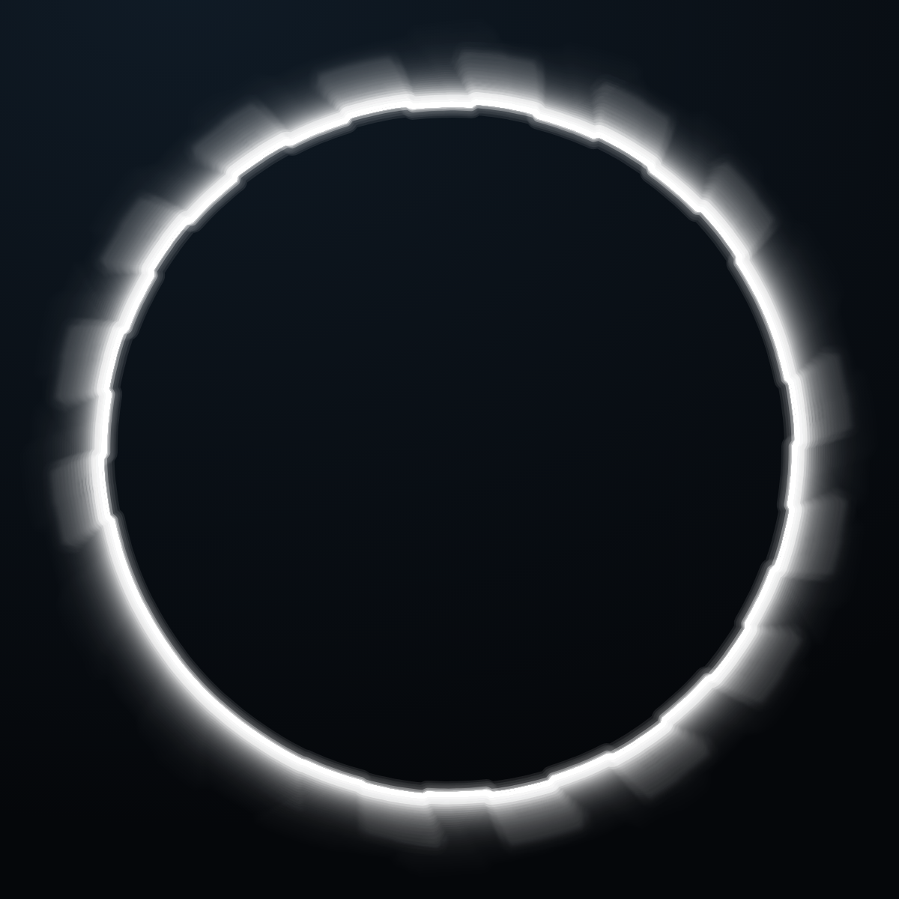
Puls1 · inel de undă — cerc perfect în tăcere, se rotește
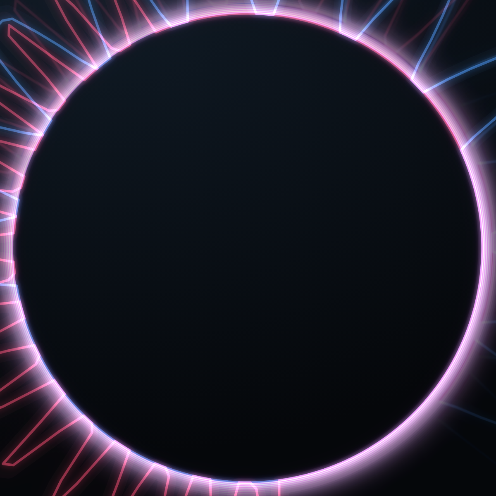
Ametist2 · oscilogramă mov — albastrul și roșul suprapuse
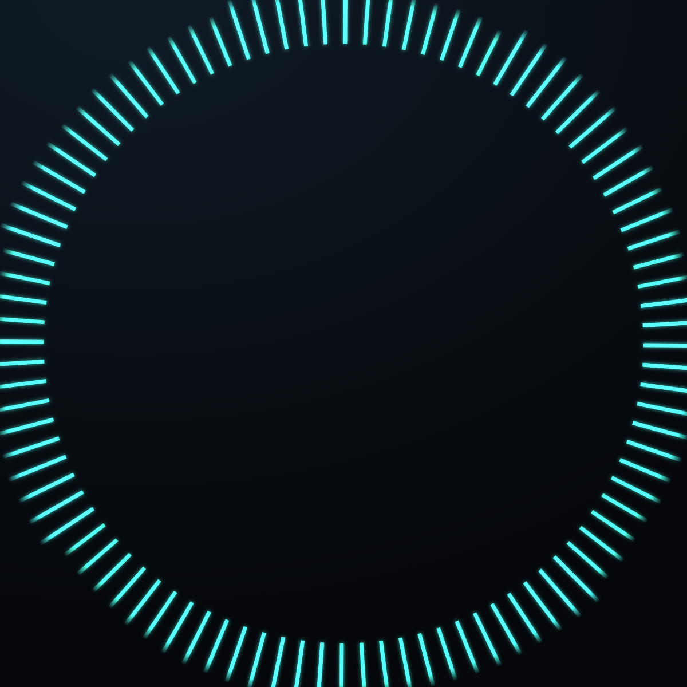
Coroană3 · coroană — numai barele, fără cerc fix
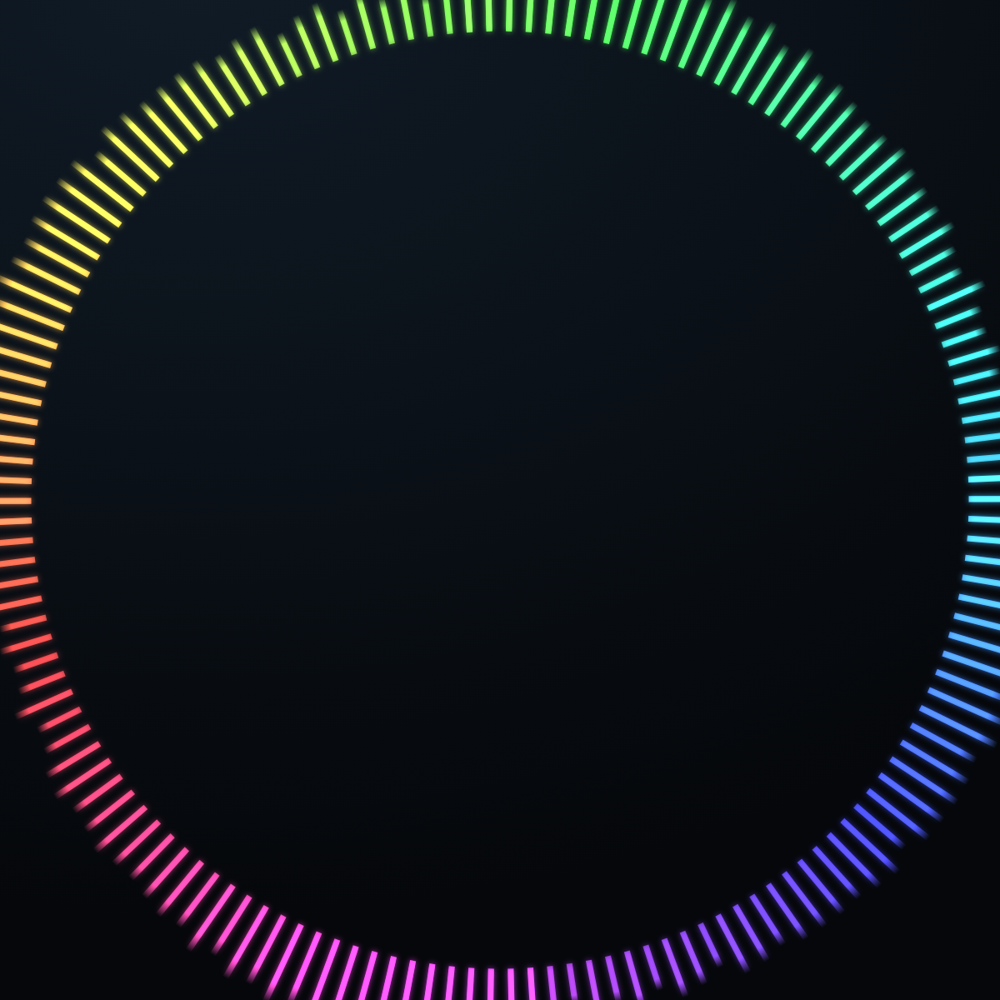
Prismă4 · inel de segmente — nuanța se închide fără cusătură
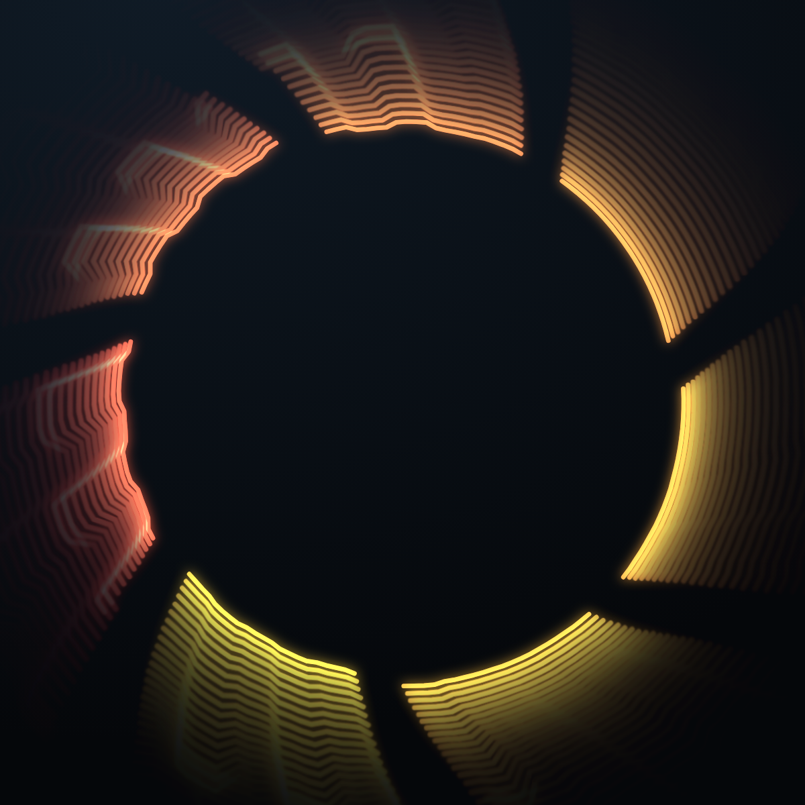
Furtună5 · lanț de fulgere — lasă valuri de ceață în urmă
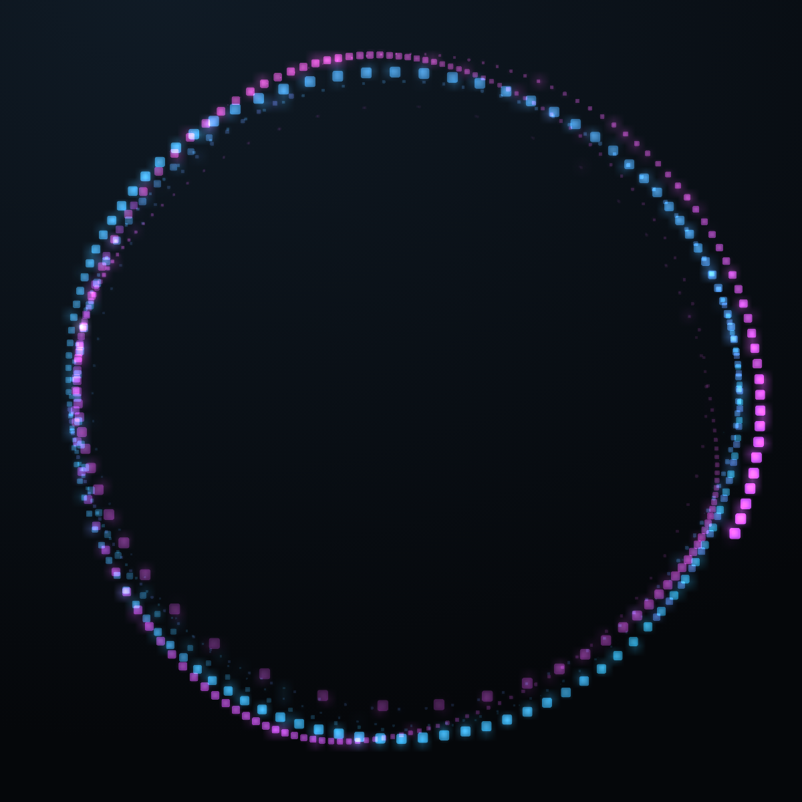
Atom6 · orbite rare — gaură mare, blocuri clare
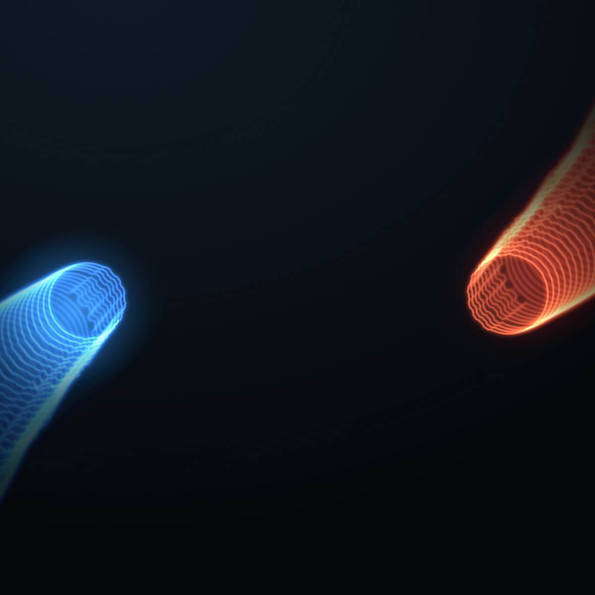
Gemeni7 · două bile — ceață suflată din contur spre exterior
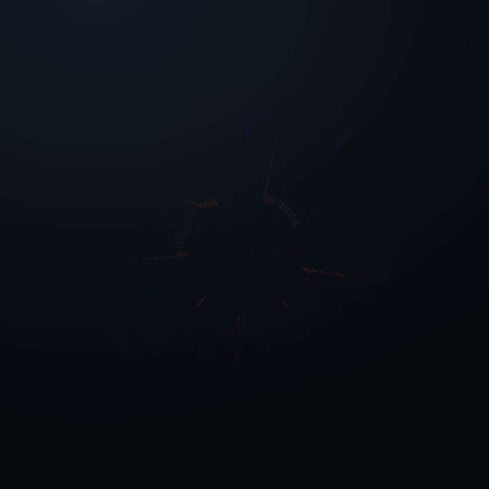
Tunel9 · MilkDrop 7 — Geiss, 3 layers (Tunnel Mix)
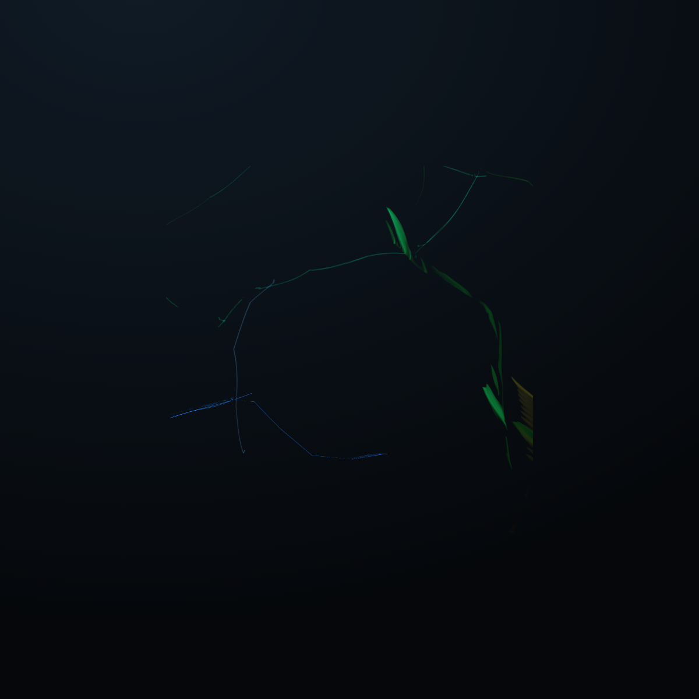
Cazan10 · MilkDrop 8 — Geiss, Cauldron painterly 2
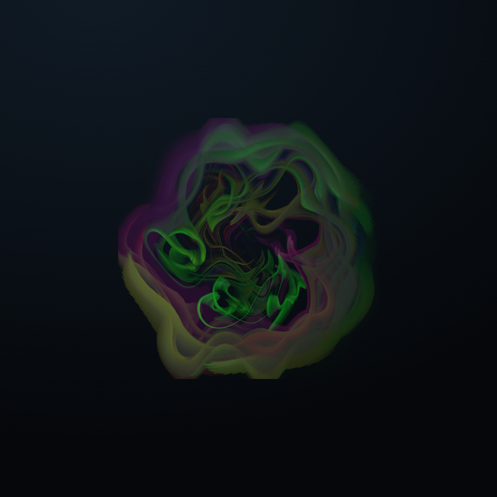
Tendrile11 · MilkDrop 20 — Aderrasi, Painterly Tendrils
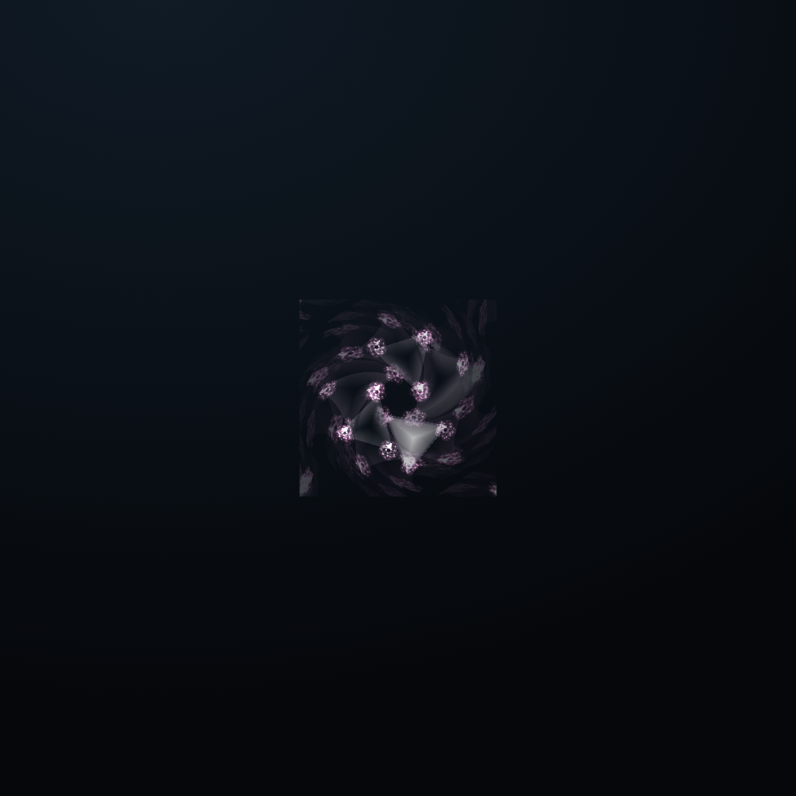
Fulg14 · MilkDrop 85 — Zylot, Star Ornament (mic)
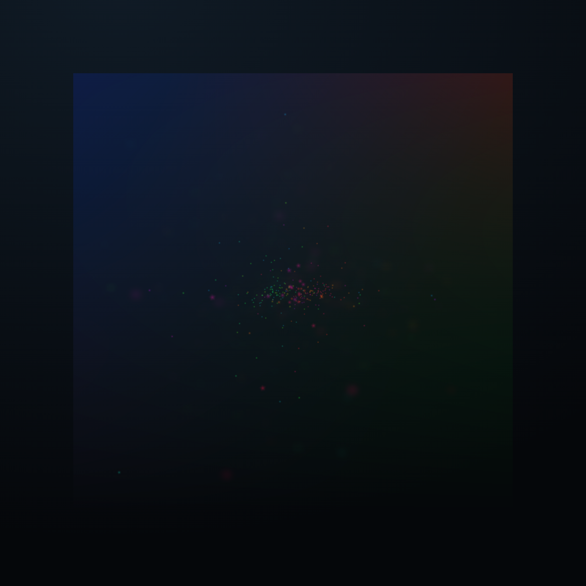
Scântei15 · MilkDrop 87 — martin, chain breaker
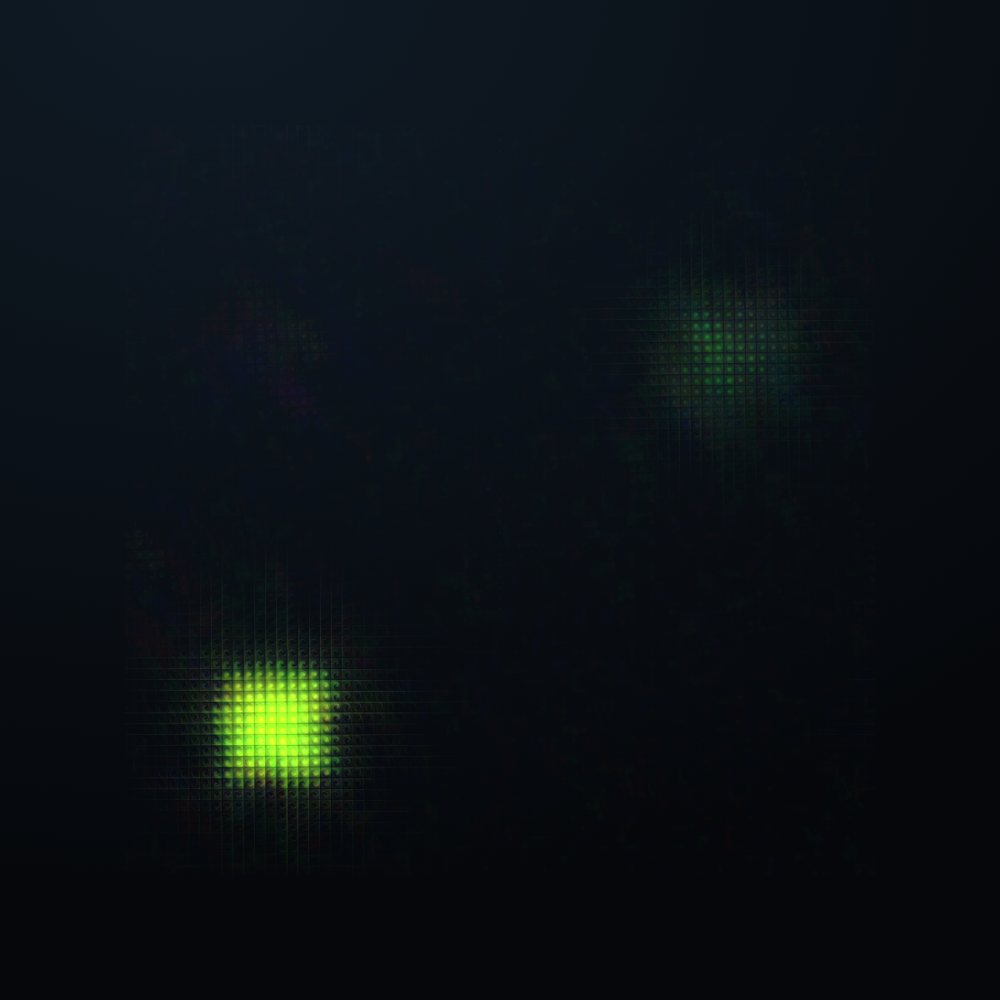
Mozaic17 · MilkDrop 99 — martin, reflections on black tiles
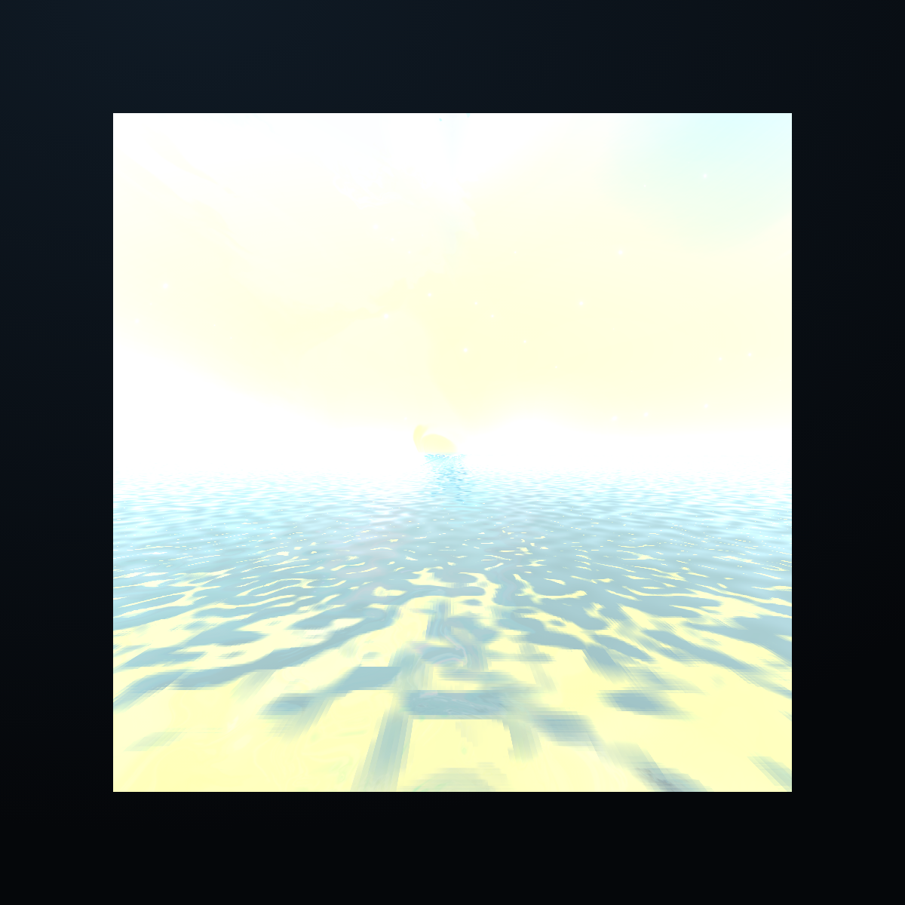
Miraj18 · MilkDrop 103 — fata morgana (apă cu oglindire)
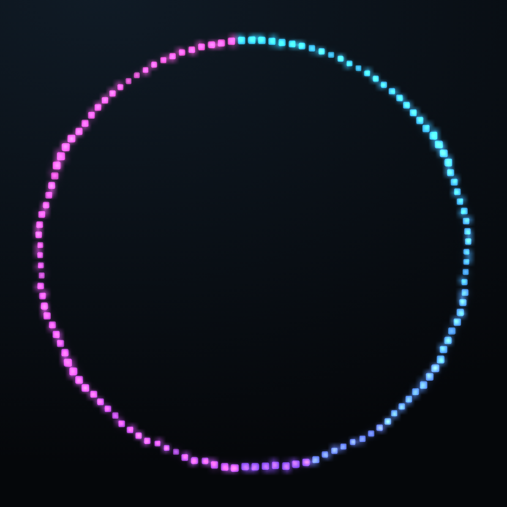
Mărgele19 · inel de blocuri — cerc în repaus, crește doar în afară